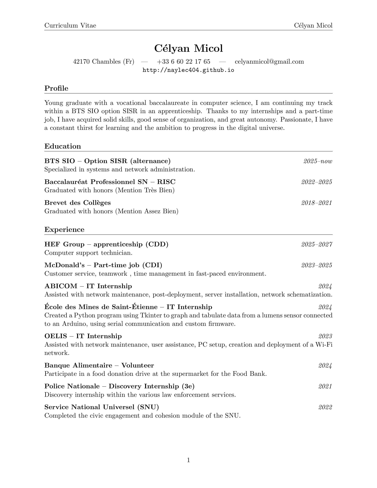
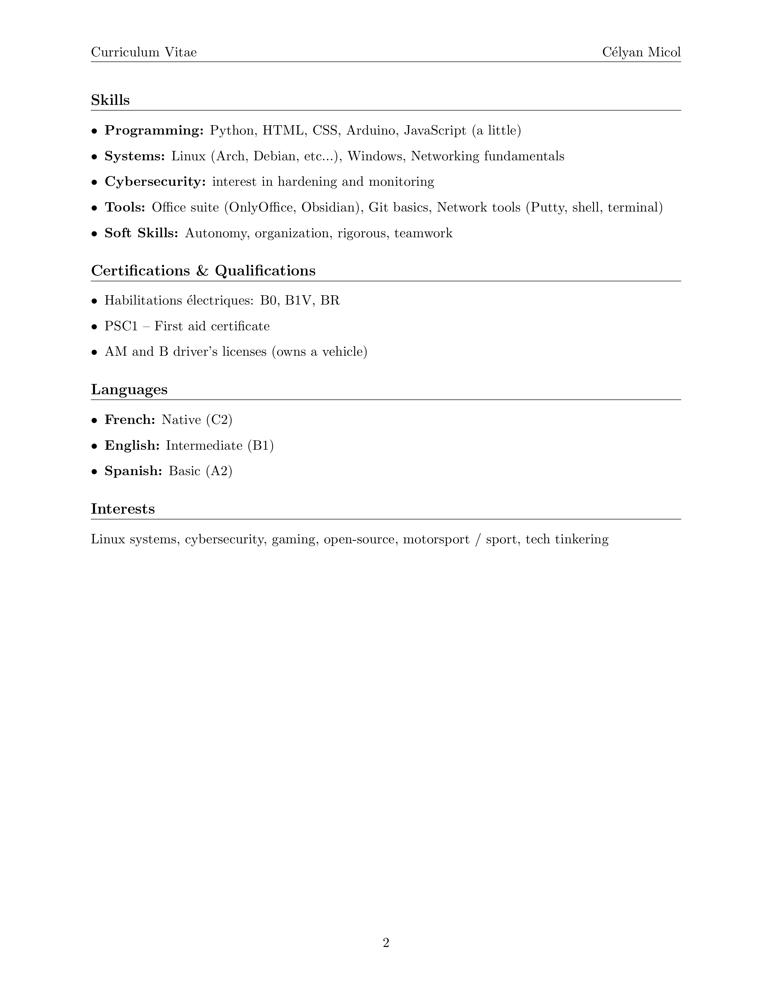

Hello World !
I'm naylec student
Hello visitors, I am a student passionate about Computer Science universe,
actually I study in technician formation in France, it's like "BTS SIO (BTS Services Informatiques aux Organisations),
option SISR (Solutions d'Infrastructure, Systèmes et Réseaux)" at the Training Center CFAI-AFPI LDA in Saint-Etienne (France).
I am therefore in parallel with courses within the HEF group as an alternate computer support technician. This allows me to develop,
deepen, and apply my knowledge and skills in a professional environment.

Curriculum Vitae

